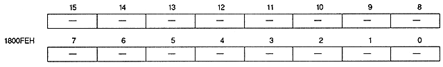
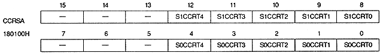
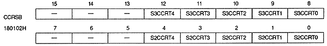
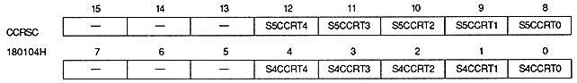
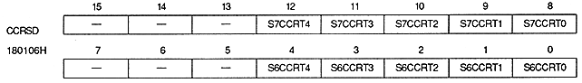

N0PRIN2 ~ N0PRIN0 | 1800F8H | bits 2 to 0 | For NBG0 (or RBG1) |
N1PRIN2 to N1PRIN0 | 1800F8H | bits 10 to 8 | NBG1 (or EXBG) |
N2PRIN2 to N2PRIN0 | 1800FAH | bits 2 to 0 | NBG2 |
N3PRIN2 to N3PRIN0 | 1800FAH | bits 10 to 8 | NBG3 |
R0PRIN2 to R0PRIN0 | 1800FCH | bits 2 to 0 | for RBG0 |





Color calculation ratio bit (for sprites) : Sprite color calculation ratio bit